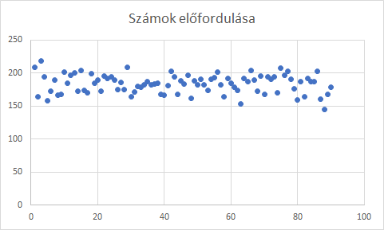
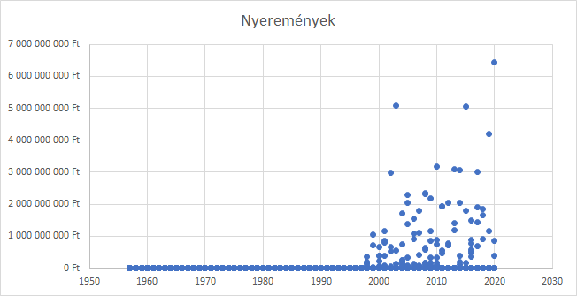

Korábbi sorsolások
Leggyakoribb számok
Leghasonlóbb számsorok
Leghosszabb sorozatok számsorokban
Legkissebb összegű számsorok
Grafikonok
Érdekes történetek
Grafikonok
Az ötös találatok nyeremény értéke idő szerint:

A 90 szám gyakorisága:
